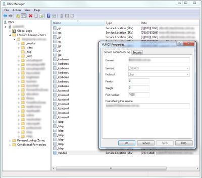

How to configure a KMS server in Windows Server 2008 R2 | JulianBen.com
Installing first KMS Server
Below are the steps I used to install the KMS server. We determined that due to the number of client activations, and the capacity of our infrastructure we had no problems installing this server on our secondary domain controller. From here on we will call it DC1.
- On the Domain Controller we run CMD with elevation
- Type slmgr /ipk xxxxx-xxxxx-xxxxx-xxxxx-xxxxx where the last section is the Key from your volume licensing website.
- Open “Windows Firewall with Advanced Security” via Start menu -> Administrative Tools.
- Under Inbound Rules scroll down to “Key Management Service (TCP-In)”, right click and select enable.
- Reboot the machine – note you can restart the Software Licensing service but I preferred to reboot it (seeing as the server was not in use for anything else)
net stop sppsvc && net start sppsvc
- Activate server after reboot. This can be done via the GUI or by executing the following command from an elevated command prompt:
slmgr.vbs /ato
- Enables automatic DNS publishing by the KMS host by entering the below command in an elevated command promt. Note this should already be enabled, but just in case, we execute the command.
slmgr /sdns
Now you are done installing your KMS server.Note this will provide activation for clients and/or servers depending on the KMS key you used to activate DC1. Office KMS activation will be covered in a later section.
I do recommend verifying that the SRV record in DNS is created. Note that you should have no problems with the automatic creation if you are using the vanilla install of AD and have no specific security restrictions in DNS. To verify that the DNS record has been created open up DNS and check. Refer to the screenshot below to see where it lives:

Installing Office KMS Host
As mentioned above we have determined that the one KMS box (DC1) is suitable to do all of our activations for Microsoft products, so now we have to configure the Office KMS host on DC1. To do this we do the following:
- Log onto https://www.microsoft.com/licensing/servicecenter/ and fetch your key: “Office 2010 Suites and Apps KMS” – Note your key may be similar. If unsure speak to your Microsoft Account Manager.
- Download the Office 2010 KMS Host License Pack from the Microsoft website: http://www.microsoft.com/downloads/en/details.aspx?displaylang=en&FamilyID=97b7b710-6831-4ce5-9ff5-fdc21fe8d965. Its only 903kb so wont take too long.
- Execute KeyManagementServiceHost.exe from your existing KMS server> In our case its DC1. Follow the prompt to finish the setup process.
- When prompted enter the KMS key for Office 2010.
Thats it. Just as easy to setup. Now you are ready to activate Office 2010 with KMS. To help monitor this, please refer the the section below.
Administering the KMS server
I take it now you want to see whether it works and if clients can be activated. Now i will go into administering the KMS server, which will be quite brief as there is not much to it, and is really only there to aid in troubleshooting, and to have a sticky beak when implementing it. Once its running there is no real reason to keep going in and checking up on it.
All functions to view settings and make changes are done through the already used VBS script slmgr.vbs. To see all the commands simply run slmgr from the command prompt. Note to execute changes you will need elevated command prompt. You will see the following screens:
slmgr help screen 1 (image not restored from the original import)slmgr help screen 2 (image not restored from the original import)slmgr help screen 3 (image not restored from the original import)slmgr help screen 4 (image not restored from the original import)
So the most common command that i used were:
Displays license information (KMS Activation Count)
cscript slmgr.vbs /dli
Displays detailed license information
cscript slmgr.vbs /dlv all
For Office specific information you can run the below command to get the info wanted:
cscript slmgr.vbs /dlv bfe7a195-4f8f-4f0b-a622-cf13c7d16864
Note I add cscript to the front of the command so that the output stays within the command window, this lets me output/scroll if there is a lot of data where as the usual vbs dialog crops the output.
Configuring KMS Clients
By default, Volume Licensing edition of Windows Vista, Windows 7 , Windows Server 2008, and Windows Server 2008 R2 are KMS clients. If the computers the organisation wants to activate using KMS are using any of these operating systems and the network allows DNS auto-discovery, no further configuration is needed.
If required you can configure the KMS client to connect to a specific KMS host, use a specific port and disable KMS auto-discovery.
When deploying KMS clients using WAIK you can use 2 different methods to prepare the client:
- SYSPREP – run Sysprep /generalize which will reset the activation timer along with removing SID and a few other settings. Read about this before actually using it.
- Software License Manager – run slmgr.vbs /rearm in an elevated command prompt to reset the grace period back to 30 days. Note you can only perform this 3 times in total.
You can also manually force activation of the client by using the GUI from Control Panel -> System or by running slmgr /ato.
If you want to convert MAK installations of Windows or Office to KMS, you need to change their product key, and then reactivate. Use the below keys to perform this:
| Operating system edition | Product key |
|---|---|
| Windows 7 | |
| Windows 7 Professional | FJ82H-XT6CR-J8D7P-XQJJ2-GPDD4 |
| Windows 7 Professional N | MRPKT-YTG23-K7D7T-X2JMM-QY7MG |
| Windows 7 Enterprise | 33PXH-7Y6KF-2VJC9-XBBR8-HVTHH |
| Windows 7 Enterprise N | YDRBP-3D83W-TY26F-D46B2-XCKRJ |
| Windows Server 2008 R2 | |
| Windows Server 2008 R2 HPC Edition | FKJQ8-TMCVP-FRMR7-4WR42-3JCD7 |
| Windows Server 2008 R2 Datacenter | 74YFP-3QFB3-KQT8W-PMXWJ-7M648 |
| Windows Server 2008 R2 Enterprise | 489J6-VHDMP-X63PK-3K798-CPX3Y |
| Windows Server 2008 R2 for Itanium-Based Systems | GT63C-RJFQ3-4GMB6-BRFB9-CB83V |
| Windows Server 2008 R2 Standard | YC6KT-GKW9T-YTKYR-T4X34-R7VHC |
| Windows Web Server 2008 R2 | 6TPJF-RBVHG-WBW2R-86QPH-6RTM4 |
| Office 2010 Suites | ||
| Office Professional Plus 2010 | VYBBJ-TRJPB-QFQRF-QFT4D-H3GVB | |
| Office Standard 2010 | V7QKV-4XVVR-XYV4D-F7DFM-8R6BM | |
| Office Home and Business 2010 | D6QFG-VBYP2-XQHM7-J97RH-VVRCK | |
| Office 2010 Stand-alone products | ||
| Access 2010 | V7Y44-9T38C-R2VJK-666HK-T7DDX | |
| Excel 2010 | H62QG-HXVKF-PP4HP-66KMR-CW9BM | |
| SharePoint Workspace 2010 | QYYW6-QP4CB-MBV6G-HYMCJ-4T3J4 | |
| InfoPath 2010 | K96W8-67RPQ-62T9Y-J8FQJ-BT37T | |
| OneNote 2010 | Q4Y4M-RHWJM-PY37F-MTKWH-D3XHX | |
| Outlook 2010 | 7YDC2-CWM8M-RRTJC-8MDVC-X3DWQ | |
| PowerPoint 2010 | RC8FX-88JRY-3PF7C-X8P67-P4VTT | |
| Project Professional 2010 | YGX6F-PGV49-PGW3J-9BTGG-VHKC6 | |
| Project Standard 2010 | 4HP3K-88W3F-W2K3D-6677X-F9PGB | |
| Publisher 2010 | BFK7F-9MYHM-V68C7-DRQ66-83YTP | |
| Word 2010 | HVHB3-C6FV7-KQX9W-YQG79-CRY7T | |
| Visio 2010 |
||
| Visio Premium 2010 | D9DWC-HPYVV-JGF4P-BTWQB-WX8BJ | |
| Visio Professional 2010 | 7MCW8-VRQVK-G677T-PDJCM-Q8TCP | |
| Visio Standard 2010 | 767HD-QGMWX-8QTDB-9G3R2-KHFGJ | |
You can convert Windows and Office from MAC to KMS using the GUI available, or you can use the following commands:
Windows
To install a KMS key, type slmgr.vbs /ipk KmsKey at a command prompt.
To active online, type slmgr.vbs /ato at a command prompt.
To activate by using the telephone, type slui.exe 4 at a command prompt.
Office
To install a KMS key, type ospp.vbs /inpkey:KmsKey at a command prompt.
To active online, type ospp.vbs /act at a command prompt.
Important Links
Here are the resources that I got most of the information I needed.
- Deploying KMS Activation
http://technet.microsoft.com/en-us/library/ff793409.aspx - How to install or Update KMS on Server 2008 for windows 7 and Server 2008 Support
http://myitforum.com/cs2/blogs/jmarcum/archive/2009/10/29/142586.aspx - Plan volume activation of Office 2010
http://technet.microsoft.com/en-us/library/ee624358.aspx - Deploy volume activation of Office 201
http://technet.microsoft.com/en-us/library/ee624357.aspx - Troubleshoot volume activation for Office 2010
http://technet.microsoft.com/en-us/library/ee624355.aspx - Tools to configure client computers in Office 2010
http://technet.microsoft.com/en-us/library/ee624350.aspx